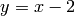

Некоторые аспекты определенных функций (например, для дифференциации или построения графиков) могут быть очень запутанными. В этой секции мы обращаем внимание на некоторые наиболее распространенные проблемы.
Далее показываются несколько способов для того, чтобы определить функции:
1. Определите функцию Python, как описано в Функциях, Отступах и Счетчики. Для этих функций могут быть построены графики, но дифференциирование и интегрирование не применимо к ним.
sage: def f(z): return z^2
sage: type(f)
<type 'function'>
sage: f(3)
9
sage: plot(f, 0, 2)
Обратите внимание на синтаксис в последней строчке. plot(f(z), 0, 2) выдаст ошибку, так как z - это переменная-болванка в определении f, которая не определена внутри данной конструкции. Просто f(z) возвратит ошибку. Следующее будет работать в данном контексте, однако, в общем, возникнут некоторые затруднения, но они могут быть проигнорированы (см. пункт 4).
sage: var('z') # define z to be a variable
z
sage: f(z)
z^2
sage: plot(f(z), 0, 2)
В этом случае f(z) - это символьное выражение.
2. Определим “вызываемое символьное выражение”. Оно может быть дифференциировано, интегрировано, а также можно построить график.
sage: g(x) = x^2
sage: g # g sends x to x^2
x |--> x^2
sage: g(3)
9
sage: Dg = g.derivative(); Dg
x |--> 2*x
sage: Dg(3)
6
sage: type(g)
<type 'sage.symbolic.expression.Expression'>
sage: plot(g, 0, 2)
Если g - это вызываемое символьное выражение, g(x) - это связянный с ним объект, но другого вида, для которого можно построить график и который можно дифференциировать и т.д.
sage: g(x)
x^2
sage: type(g(x))
<type 'sage.symbolic.expression.Expression'>
sage: g(x).derivative()
2*x
sage: plot(g(x), 0, 2)
3. Можно использовать уже определенную функцию Sage - ‘функцию исчисления’. Для нее может быть построен график, она может быть дифференциирована и интегрирована.
sage: type(sin)
<class 'sage.functions.trig.Function_sin'>
sage: plot(sin, 0, 2)
sage: type(sin(x))
<type 'sage.symbolic.expression.Expression'>
sage: plot(sin(x), 0, 2)
Сама по себе функция sin не может быть дифференциирована, по крайней мере не может произвести cos.
sage: f = sin
sage: f.derivative()
...
AttributeError: ...
Использование f = sin(x) вместо sin работает, но лучше использовать f(x) = sin(x) для того, чтобы определить вызываемое символьное выражение.
sage: S(x) = sin(x)
sage: S.derivative()
x |--> cos(x)
Далее следуют некоторые общие проблемы с объяснением:
4. Случайная оценка.
sage: def h(x):
... if x<2:
... return 0
... else:
... return x-2
Проблема: plot(h(x), 0, 4) построит кривую . Причина: В команде plot(h(x), 0, 4) сначала оценивается h(x), что означает подставку x в функцию h и оценку x<2.
sage: type(x<2)
<type 'sage.symbolic.expression.Expression'>
Решение: Не используйте plot(h(x), 0, 4); используйте:
sage: plot(h, 0, 4)
5. Ошибочное создание константы вместо функции.
sage: f = x
sage: g = f.derivative()
sage: g
1
Проблема: g(3), например, возвратит ошибку с сообщением “ValueError: the number of arguments must be less than or equal to 0.”
sage: type(f)
<type 'sage.symbolic.expression.Expression'>
sage: type(g)
<type 'sage.symbolic.expression.Expression'>
g не является функцией, это константа, поэтому она не имеет переменных, и вы можете вставлять что угодно в нее.
Решение: есть несколько возможных путей.
sage: f(x) = x # instead of 'f = x'
sage: g = f.derivative()
sage: g
x |--> 1
sage: g(3)
1
sage: type(g)
<type 'sage.symbolic.expression.Expression'>
sage: f = x
sage: g(x) = f.derivative() # instead of 'g = f.derivative()'
sage: g
x |--> 1
sage: g(3)
1
sage: type(g)
<type 'sage.symbolic.expression.Expression'>
sage: f = x
sage: g = f.derivative()
sage: g
1
sage: g(x=3) # instead of 'g(3)'
1
Есть еще один способ, как определить различие между производными f = x и f(x) = x
sage: f(x) = x
sage: g = f.derivative()
sage: g.variables() # the variables present in g
()
sage: g.arguments() # the arguments which can be plugged into g
(x,)
sage: f = x
sage: h = f.derivative()
sage: h.variables()
()
sage: h.arguments()
()
Как показывает данный пример, h не принимает аргументов, поэтому h(3) вернет ошибку.